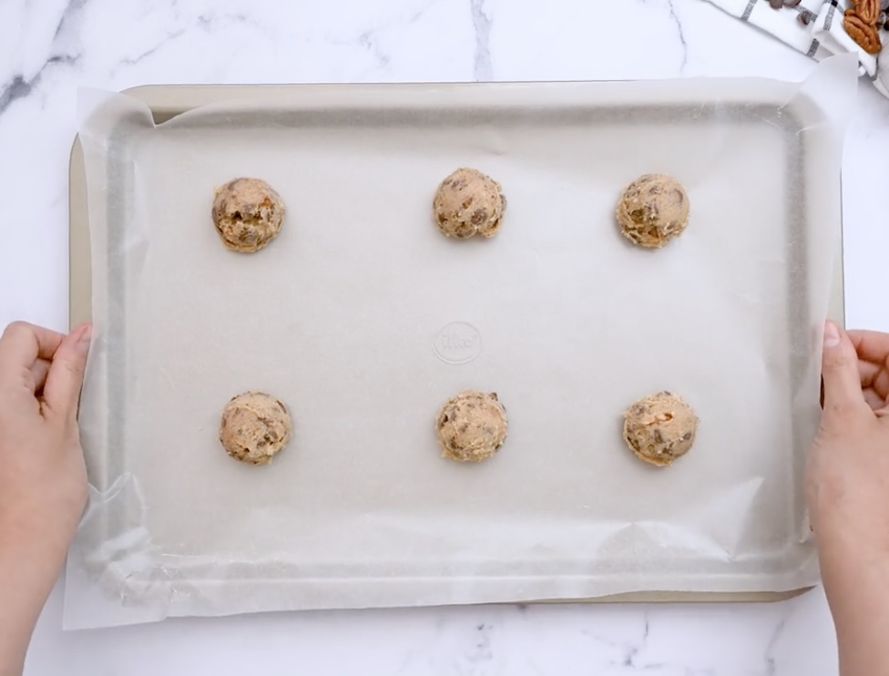
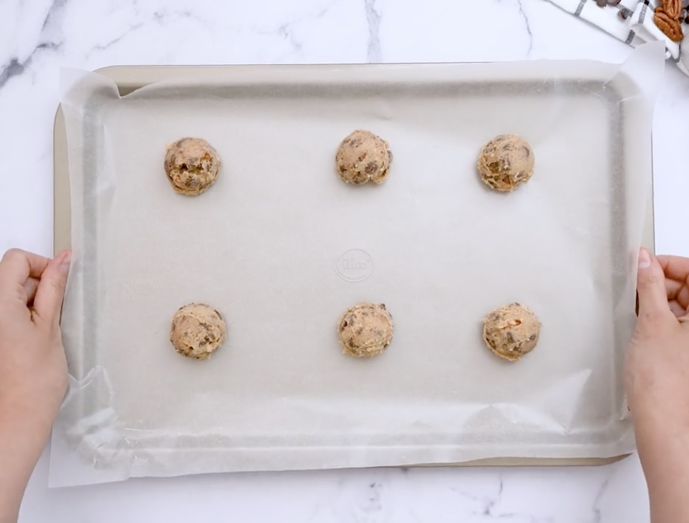

Chocolate Chip Cookies
 

Click here for website reference!
Ooey-Gooey Goodness
Are you a chocoholic like me? If so, you won't regret doubling the batch!
These extra chocolate lovers these easy minimum bake time cookies are a
must, with easy-to-find pantry ingredients leaving your kitchen smelling
like a bakery. Made with extra chocolate chips giving
them that gooey (instagram worthy) cookie break that we all drool
over. These are good for any occasion and year round delights!
Ingredients:
- 1¼ cups flour
- 3 tablespoons cornstarch
- ½ teaspoon salt
- teaspoon baking soda
- cup cold butter (1 stick of butter is usually 1/2 cup)
- 6 tablespoons granulated sugar
- 6 tablespoons brown sugar
- 1 egg
- teaspoon vanilla extract
-
1 bag semi-sweet chocolate chips. About 10-11 oz (or 1/2 a bag if you
want less chocolate)
- ¼ cup walnut pieces (optional)
Baking Steps:
- Preheat oven to 475°.
- Prepare baking sheets with parchment paper to prevent sticking.
-
In the smaller mixing bowl, whisk together the flour, corn starch, salt,
and baking soda.
- Cut the stick of butter into smaller pieces.
-
In the larger mixing bowl, combine the butter, sugar, brown sugar, egg,
and vanilla extract.
-
Gently stir the dry ingredients (flour, corn starch, salt, etc.) into
the larger bowl with the butter/egg/sugar mixture.
-
Add in chocolate chips and optional walnuts. Mix gently until fully
combined.
-
Using a full size spoon (tablespoon), make cookie dough balls and place
them on the baking sheet.
-
Bake for 6-7 minutes or until the tops of the cookies get golden/brown
(keep your eye on them).
-
Remove from the oven and let them cool. They’ll continue to cook on the
inside while they cool.
-
For the softest cookies, eat them when they are warm, not totally
cooled.